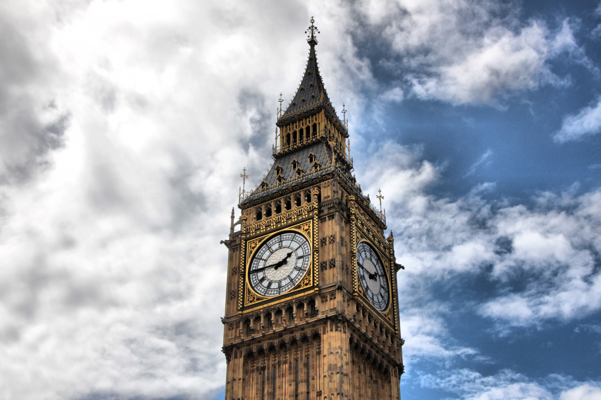

Londyn

Zabytki:
- Big Ben
- Eye of London
- Tower of London
- Tower Bridge
- Buckhingham Palace
Ciekawostki:
- Londyn nie zawsze nazywany był Londynem. Zanim nadali nazwę „Londyn”, używali nazw tj. Londonium, Ludenwic i Ludenburg!
- Pierwsze na świecie ogród zoologiczny otwarty był po raz pierwszy w 1829 r. w Londynie.
- Najwyższym budynkiem w Londynie jest The Shard London Bridge – jest wysoki na 310 metrów.
- Big Ben to dzwon, a nie wieża zegarowa.
- Nielegalna jest śmierć w Pałacu Westminsterskim.